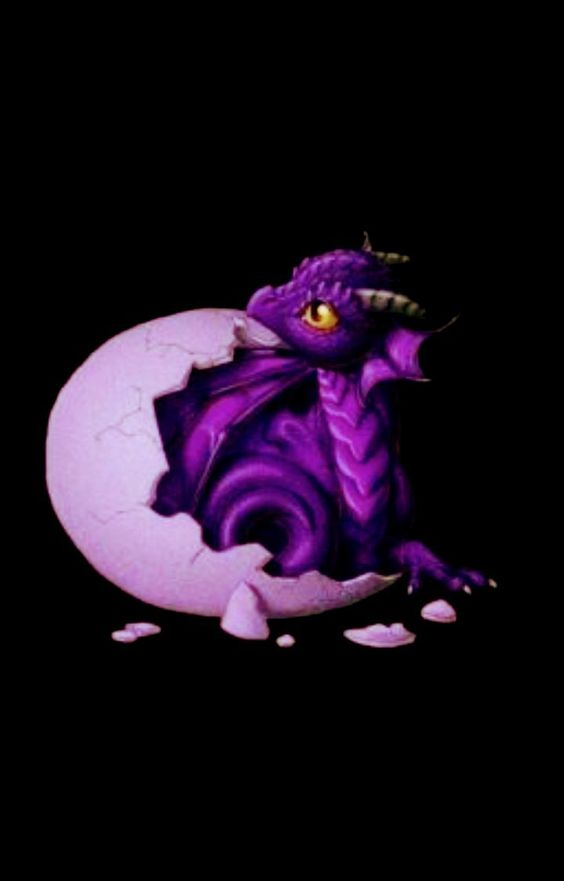

Dragones
Adorados en algunas culturas y temidos en otras, criaturas misteriosas,elegantes y fuertes.
Los dragones son criaturas buenas o malas?
Una de las curiosidades de los dragones que marcan la diferencia entre las dos tradiciones, es que en Oriente Próximo y Europa, estos seres representan el mal. Por el contrario, en el Lejano Oriente, se tratan de criaturas benéficas y son augurio de la buena suerte. En las primeras mitologías europeas, de oriente próximo y Egipto, los dragones eran devoradores de dioses. Como para muchas de estas culturas el sol era un dios, se relacionaba a los dragones con los eclipses. Estos animales eran los causantes, debido a que «se comían» al dios del sol o a la luna.
